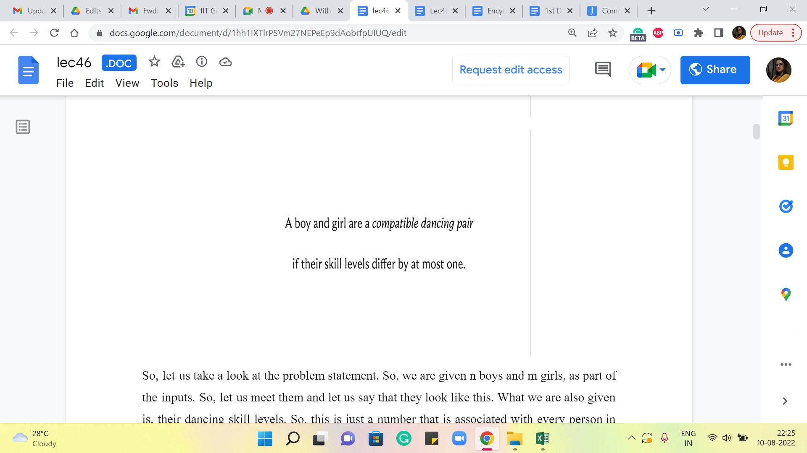
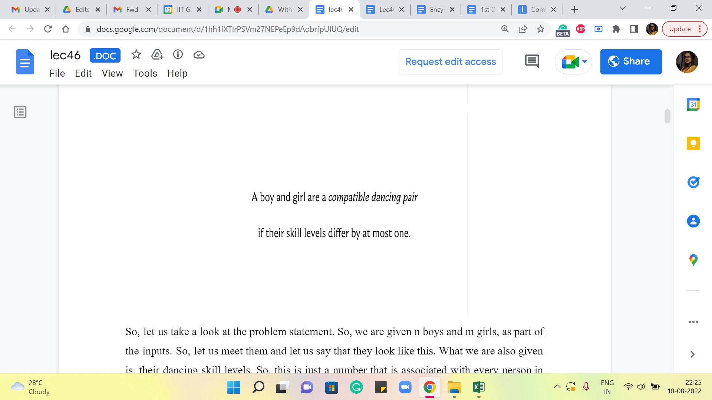
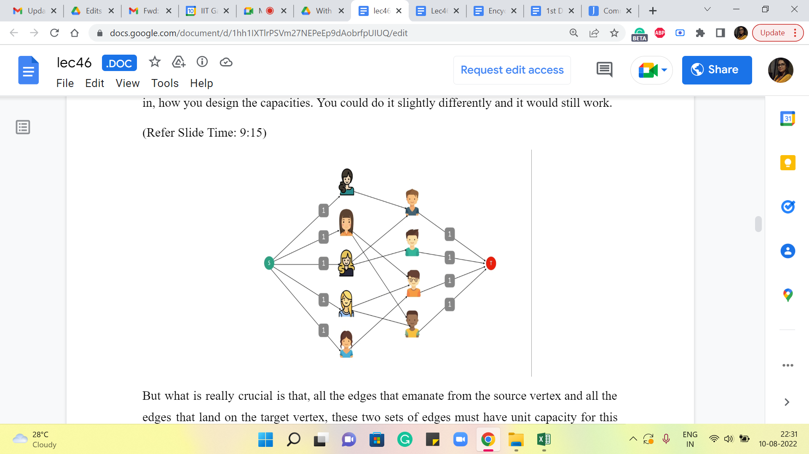
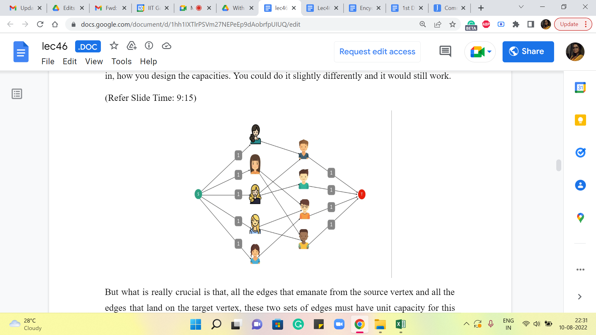
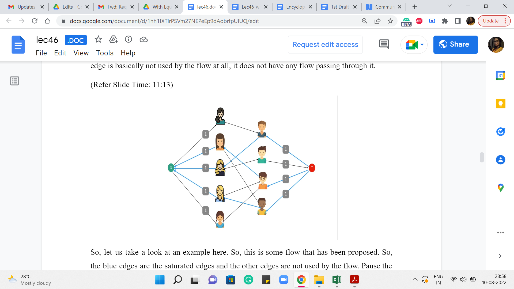

M 2 (Maximum Matching via MaxFlow)
Lecture - 46
Network Flows - Module 2 (Maximum Matching via MaxFlow)
(Refer Slide Time: 0:11)

Welcome back to the second module of the eighth week in Getting Started with Competitive Programming. So, as you might remember, this week, we are talking about network flows. And in the first module, what we did was set up the problem of finding a maximum flow through a flow network.
Now, in its own right, this may sound like a fairly specific problem to solve, so you might be wondering why it is presented as a technique. And I had mentioned that one of the reasons it is the case is because a whole host of problems can be essentially modeled as the problem of finding a maximum flow through a flow network, even if it is not, apparently, related to graphs and often many graph problems also can be modeled in this way.
So, I want to demonstrate that through a couple of examples. The one that we are going to see in this module is essentially a problem that can be thought of as a classic graph problem. And we are going to see how that essentially boils down to finding a maximum matching in an appropriately set up flow network. And in the next and the last module for this week, we will talk about a fun problem called SPORT elimination, which on the face of it, does not look like it has anything to do with graphs at all, and yet can be solved using maxflow once again.
So with that said, let us get started with the problem for this module. This one is called BerSU Ball if I am pronouncing that right. This is from Codeforces, and if you look at the tutorial for this problem, it says that there are like 10,500 ways of solving this problem. And this is going to be one of them. Some of this story might remind you of a problem called stable matching, which we talked about way back when we were doing greedy algorithms. But this turns out to be a much simpler setting.
(Refer Slide Time: 2:00)
 

So, let us take a look at the problem statement. So, we are given n boys and m girls, as part of the inputs. So, let us meet them and let us say that they look like this. What we are also given is their dancing skill levels. So, this is just a number that is associated with every person in the problem. So, let us denote these skill levels by these numbers in the red boxes. We are told that a boy and a girl are a ‘compatible dancing pair’ if their skill levels differ at most by one.
(Refer Slide Time: 2:30)

So, let us figure out who the compatible dancing pairs are in our example here. Now, as you can imagine, this is going to be convenient to think of as a graph. So, let us imagine that all the boys and the girls that we have here are vertices of a graph. And the construction of the edges basically reflects the compatibility in the sense that was just defined a moment ago, where we said that a boy and a girl form a compatible dancing pair if their skill levels differ by at most one. So, you could pause the video here and try and enumerate all the compatible dancing pairs, or you could just follow along and verify that, hopefully, we have drawn these correctly. So, we are going to draw an edge between a pair of vertices corresponding to a boy and a girl, if and only if the numbers that are associated with them differ by at most one. So, these are going to be the edges, for our example here.
(Refer Slide Time: 3:27)

So, that is the input, and our goal is to form as many pairs as we can for an upcoming event. So, notice that these pairs should be disjoint. So, they are all going to go to this event and be involved in simultaneous dances. So, it is going to be very awkward if you have the same boy or the same girl being involved in multiple pairs. So, that is your main constraint – that you want the pairs to be disjoint.
(Refer Slide Time: 3:50)

And once again, let us take a look at our example. So, here you can see that, well, the maximum number of pairs you can form is actually four because there are only four boys even though there are five girls. So, one of the girls is necessarily going to be left out. And you might wonder if it is actually possible to form four pairs.
So, take a moment here and see if you are able to form 4 disjoint pairs of boys and girls who are mutually compatible when it comes to dancing together. Alright. So, if you had a chance to think about it, you will probably find that there is at least one way of forming these pairs so that you actually get four pairs, and as we said, that is the best that we could hope for in this example. So, this is the optimal answer.
You could think about if there are other ways of forming these pairs. And it is probably an interesting question to think about, how many ways you can form these pairs. But that is a question for a different occasion. We are just going to focus on the problem of finding the maximum number of compatible disjoint pairs that we can form.
So, what we are going to do is, we are going to set up a flow network around this graph or based on this graph and we want to set it up in such a way that the maximum flow through the network corresponds to the answer that we are looking for, which is the maximum number of disjoint pairs, which I will henceforth refer to as a maximum matching because the language of graphs collection of disjoint edges is called a ‘matching.’
So, here is the flow network that we are going to set up. I am going to reveal this in a moment. So, if you want to play around with this and try to come up with your own construction, then feel free to take a pause here and come back when you are ready.
(Refer Slide Time: 5:34)

So, we are going to work with the graph that we have just built up. But remember that flow networks are directed graphs, and we actually do want to orient these edges. Of course, we have said before that we could work with undirected graphs by modeling them as bi-directional edges, but in this example, we would not really want to do that.
So, we are going to take all the edges that we have between boys and girls and orient them so that every edge is going from a girl to a boy. So, they are all oriented from left to right. I do not know if the arrows are clearly visible on your screen, but if not then just keep in mind that, that is the direction that we have associated with these edges. Now, remember that every flow network has two special designated vertices, which we call the source and the sink.
So, let us introduce a source vertex. This is an extra artificial vertex on top of what we already have. And what we are going to do is make the source vertex adjacent to all the vertices that are representing the girls. Similarly, we are going to introduce a sink vertex and we are going to make all the vertices representing the boys adjacent to the sink vertex. So, that is going to be the structure of our flow network. But this does not complete the description of the flow network. You want to think for a moment about what information is missing.
So, if you recall a flow network was a directed graph with two special designated vertices called the source and the target. But also we had a capacity function. So, our description of this flow network will be complete once we specify capacities for all the edges out here. And this is where, as somebody who is modeling the network, we have full freedom to specify whatever capacities we want.
And we want to engineer the capacities in such a way that a maximum flow through the network actually picks up the solution that we wanted to find for us. So, usually, whenever you are modeling any problem as a flow network, you can think of the capacities as an opportunity to encode, whatever constraints you are working with. So, remember that in this problem our goal is to find the largest collection of matching pairs between the girls and the boys.
So, in some sense, I can already anticipate that I want the flow to help me find a solution. So, for instance, if I am routing one unit of flow from the source to a particular girl and from there it has to go to one of the boys and it will finally end up at the target vertex, I do want to be sure that this flow is not something that asks me to either choose two boys for the same girl or ends up going to the same boys starting from two different girls on the left-hand side.
So, somehow my mindset is that that is something that should be prevented. So, a flow should not be allowed to behave in that way, (to be) to give me solutions that do not make sense. So, you can think about this question for a moment here: What sort of capacity should you associate with the edges so (that) the flow corresponds in a very natural way to a matching? So, take a pause here and come back once you have had a chance to think through this a bit.
(Refer Slide Time: 8:55 and 9:15)
 

Alright. So, here is what we are going to do. We are going to set the capacities of all the edges to one. I should mention that this is not necessarily the only way of doing it. I am just putting it this way because it is easy for me to state what we are going to do. You do have some flexibility in how you design the capacities. You could do it slightly differently and it would still work.
But what is really crucial is that all the edges that emanate from the source vertex and all the edges that land on the target vertex – these two sets of edges must have ‘unit’ capacity for this network, to do what we wanted to do. So, we will see exactly how that plays out in a moment. But before we get to that I want to detour and make a small remark about the nature of max flows in networks that have integer capacities because this is a fact that will be useful for our upcoming discussion.
(Refer Slide Time: 9:43)

So, it turns out that if all capacities are integers, then you can always find a maximum flow, which associates an integral value to every edge. This is not very hard to see from the behavior of the Ford-Fulkerson algorithm that we discussed in the previous module. So, if all your capacities are integers, then notice that the bottleneck capacity will also be an integer in every iteration.
So, the amount of flow that you push in every iteration, the amount by which your max flow gets incremented in every iteration, is also an integer. So, you can formally prove this using induction on the number of iterations and so on. But hopefully, for now, you find it believable that, this statement is true. Notice that all of our capacities are unit capacities.
So, essentially when you are looking at an integral maxflow, that just means that every edge is either completely used by the flow or it is not used at all. So, there are no fractional flow values. There is no edge that has a flow of 0.5 passing through it. So, because of this, it is kind of convenient to really describe this flow because every edge is going to either be fully saturated by the flow or is going to be completely avoided by the flow.
So, saturated is a term that we use when the flow passing through the edges is equal to the capacity. Because the maxflow is integral and the capacities are one, we are in a situation where every edge that has a flow passing through it is in fact, saturated. And every other edge is basically not used by the flow at all, it does not have any flow passing through it.
(Refer Slide Time: 11:13 and 12:47)
 
So, let us take a look at an example here. So, this is some flow that has been proposed. So, the blue edges are the saturated edges and the other edges are not used by the flow. Pause the video here for a moment and think about whether this could be a maximum flow or whether you can do better.
Alright. So, one way to check if this is a maximum flow or not is to do what our algorithm would have done, which is to say that you compute the residual graph, which looks like this. Essentially every edge that had a flow going through it gets reversed and all the other edges remain as it is. I have not shown you here, the edges that have a residual capacity of 0 because those edges are effectively missing from the network. We never use them when we find an S-T path. So, this is what the residual graph looks like and the question you are interested in is whether there is an S-T path in this graph.
So, if you think about it for a bit you will discover that there is indeed at least one S-T path, and here is one that looks like this. It is been highlighted by the orange edges. So, what happens when you push a unit flow? So, remember that all the edges have unit capacity. So, your bottleneck capacity will also automatically be one. So, you are going to pass a unit flow through this S-T path. Notice that this path has one back edge. So, that essentially means that we are going to reverse our decision of using the edge between the third girl on the left and the first boy on the right.
So, we do not want to pass the flow through that edge anymore, and instead, we are going to pass a flow through these other two edges that you can see here on your screen. Now notice two things about this particular flow. First of all, it has a value of four, which seems to be a bit of a coincidence. Remember that when we were working on finding a maximum matching on the example on which this flow network is based, we found that the largest matching that we could find had four edges.
So, that is one thing. The other one is, that notice that this is also a maximum flow because if you look at for example all the edges that are incident on the target vertex, the total capacity of these edges is four. So, you cannot possibly have any flow that has a value that is greater than four. So, the maxflow in this network has a value of four, and it seems to coincide with the value of the maximum matching that we found earlier in the graph on which this flow network is based. It turns out that this fact is not a coincidence for this example, and it is actually true in general.
Now before we talk about why these two values are equal, let us talk about how we can use the flow to obtain a matching in the graph that we originally had. So, to do that, what we are going to do is, reverse the process that we used to construct the flow network from the graph. So, now I want to go back to the graph.
(Refer Slide Time: 14:06)


So, I am going to start off by throwing away the source and the target vertices. And in what remains I still see the edges that have been saturated by the flow. So, let us just focus on these edges and notice that these edges actually form a valid matching. So, once again this is no coincidence. The fact that – the edges between the boys and the girls (that are) saturated by any flow form a matching – is something that you can actually prove.
So, if you like, take a moment here to think about why this always turns out to be the case, and when you are back, we will continue our discussion and actually establish this as a fact. Alright. So, here is, what we want to claim. We want to claim that any flow of value k in this flow network corresponds to a ‘matching’ with k edges in the graph on which this network is based.
(Refer Slide Time: 14:44 and 14:52)


To see this, notice that we had these edges from the source and the edges incident on the target, which had capacities of one each. So, if you focus on the set of edges that are saturated by the flow that goes between the boys and the girls, think about what would happen if those edges had a structure that did not look like a matching.
So, that would mean that you either have a situation where you have one girl who is matched with two boys or more. Or you have one boy who has been matched with two girls or more. In the language of graphs, you would say that there is a vertex in the left column, corresponding to the girls, that has a degree of two or more. Or you have a vertex in the right column, which corresponds to the boys, that has again degree two or more, among just the edges that have been saturated by the flow.
But notice that this is impossible because, for instance, suppose you had a vertex corresponding to a girl which had degree 2 among the edges saturated by the flow, then you violate the conservation constraint at this vertex. Because notice that the maximum amount of flow that can come into this vertex is one and that means that there is only one unit of flow that you can route out of this vertex.
And remember that every edge that is being used by the flow, is fully saturated because that is the kind of flow that we are working with without loss of generality. Right. So, it is not that you have these two outgoing edges where you are going to split the flow half-and-half because that is just not the kind of flow that we are working with.
A very similar argument holds if you have a vertex corresponding to a boy that has degree two among the saturated edges. So once again you will violate the conservation constraint. In this case, you have too much flow coming into the vertex and you cannot shake it off because the only edge that is outgoing from this vertex is to the target vertex and that has a capacity of one.
So, if you have an incoming flow that is greater than one, then it will necessarily violate the conservation constraint. So, this shows that if you have a flow of value k then you can actually use the flow to obtain a matching on ‘k’ edges as well, by simply looking at those edges between the boys and the girls that are saturated by the flow. It will necessarily have a matching structure.
(Refer Slide Time: 17:13 and 17:23)


On the other hand, if somebody gives you a ‘matching’ in the graph that we started with, then you can actually use that matching to also construct a flow whose value is the same as the number of edges in the matching.
To see that this is true let us begin by considering a matching in the graph that we started with. Now recall how we built the flow network. We essentially built it on top of this graph. So we oriented all the edges of this graph and then we added a source and a target vertex and some additional edges. The point is that every edge that you see here is in one-one correspondence, in a very natural way, with some edge in the flow network. So, essentially let us find this matching in our flow network.
(Refer Slide Time: 17:49)

And let us begin by saturating these edges. So, I have defined a partial flow, where we have essentially taken the edges of the matching and we have decided to pass one unit of flow through these edges. Now as you can see this is not a valid flow yet because we are violating conservation constraints at both endpoints of these matching edges. So, take a moment here to think about, how you will fix this issue with this partial flow that we have built up so far. This is really a very natural thing that you can do. So, see if you can find it and come back when you are ready.
Alright. So, to turn this into a valid flow what we are going to do is basically extend it in both directions. So, for every girl who has been matched by this matching, we are going to add a flow of one unit, from the source vertex to the vertex corresponding to the girls. So, we have a flow going through these edges here.
And similarly, for every boy that is matched by the matching, we are going to push one unit of flow through the edge, which has its endpoints as the vertex corresponding to that boy, and the target vertex on the other hand. So, that is a flow going through all of these edges here. So, you can see that this is a perfectly valid flow. And its value is clearly equal to the number of matching edges that we started off with.
So, that is how you go from a ‘matching’ to a ‘flow.’ Given both of these statements, you can see why the value of the maximum flow in this network is equal to the size of a maximum matching in the graph that we started with. So, here is what our algorithm is going to do for this problem.
It is going to build the flow network and then return the maximum flow by invoking a flow algorithm. Notice that this may not be the most efficient way of finding a maximum matching in a bipartite graph. So, for instance, in SPOJ, there is a problem called fast matching and if you try to use this approach to solve that problem, then you will time out on some of the larger tests.
So, there are more fine-tuned maximum matching algorithms and you can find out more about them separately. But it turns out that in many situations if the constraints are reasonable, this is a perfectly valid way of finding a maximum matching. Just keep in mind that if your constraints are crazy, then this may not always work. Alright. So, what does the code look like?
(Refer Slide Time: 20:00)

It is actually really simple. You just have to essentially bring in the information about the skill levels of the boys and the girls and then we initialize this max flow object with the number of vertices being the number of boys + the number of girls + 2 because we need those two extra source and target vertices. And then what we do is, basically go over all boy-girl pairs, check if their skill levels differ by at most one, and if they do, then we add an edge from the vertex corresponding to the girl to the vertex corresponding to the boy or the other way around – it does not really matter as long as you are consistent.
So at this point, we have built up the bulk of the graph, the middle part. Now we need to add the source and the target vertices. These have been implicitly added just because we have the correct number of vertices. What we really need to add to the system is the edges that are incident on the source and the target vertices.
(Refer Slide Time: 20:55)

So, let us go ahead and add these remaining edges. Remember to set these capacities to one. This is really crucial for the algorithm to have the desired behavior. Once you are done with these steps, you have actually completed building out the flow network. Now all you have to do is compute the maxflow and return the value of the maxflow.
So, what we are doing here is invoking Edmonds-Karp, which is the function that computes the maxflow the one that we discussed in the first module. So, all that you have to do now is output the value that is returned by this function, and you are done. So, as you can see all the heavy lifting is really done by this function call. All you have to do is really construct the appropriate flow network.
So, this is true for most problems that are based on modeling some other problem as an instance of maxflow. The work is really around finding the right construction and convincing yourself to some extent that the construction appropriately captures whatever it is that you are trying to find. But once you have that figured out the implementation typically is quite straightforward, especially assuming that you already have access to the maxflow functions in advance.
So, that is about it for this particular module here. We are going to continue our conversation with one more example of maxflow modeling, for a problem that is called sports elimination. So, that is the final module for this week and I will see you there!